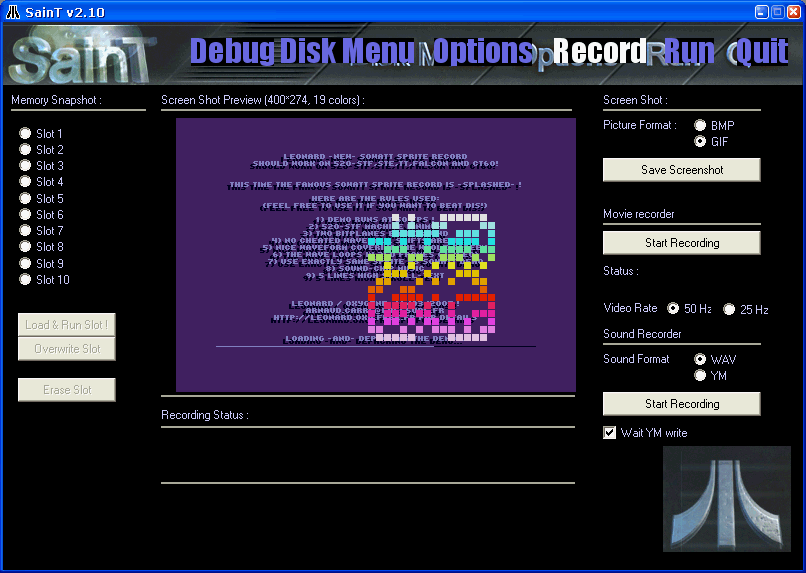

Just click on the "Record" logo at top of the screen, and you should get that page:

You can record your fave music using SainT too. Use "WAV" format for general music saving. Simply press "Start recording" (button label changed to "stop recording). Then you can run your game again by choosing "Run" menu item. SainT record the sound while the game is running. When you want to stop, simply press F12 to get back to the SainT interface and click on the "Stop record" button. Sound files are saved in a "Sound" folder, in the "SainT.exe" directory.
SainT support the today famous .YM format ( used by ST-Sound, a nostalgic music player ). YM can only record basic sound chip music. (YM supports all SID or DIGIDRUM effect but SainT can't produce such YM files automatically).
Memory snapshot is a nice new feature. You can save emulation state anywhere you want (in your fave game or demo). Then, when you run SainT again you can reload the game at the exact point you leaved it. (Even if a game has no saving option). By default, SainT always save the memory when you quit, and reload it next time you launch it. Added to this, you can use 10 "slots" to save or load the memory shot you want.
To choose a memory snapshot back, simply click on each slot to see the preview picture. If this is the game you wanted to reload, just click on the "Load & Run slot" button and enjoy !